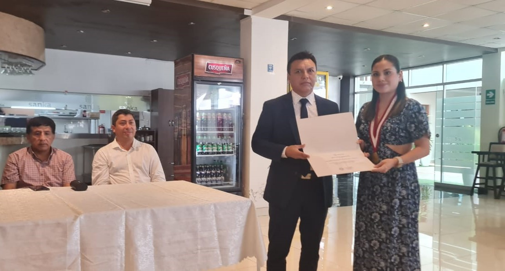
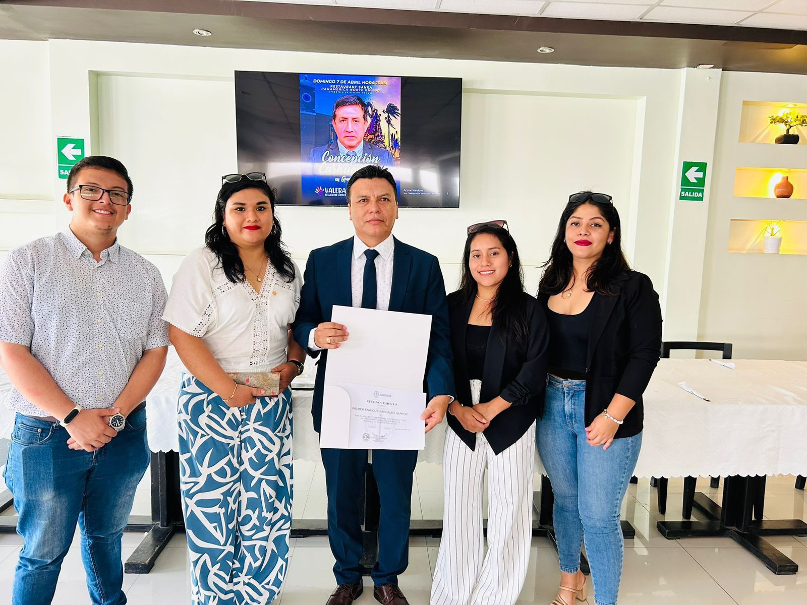
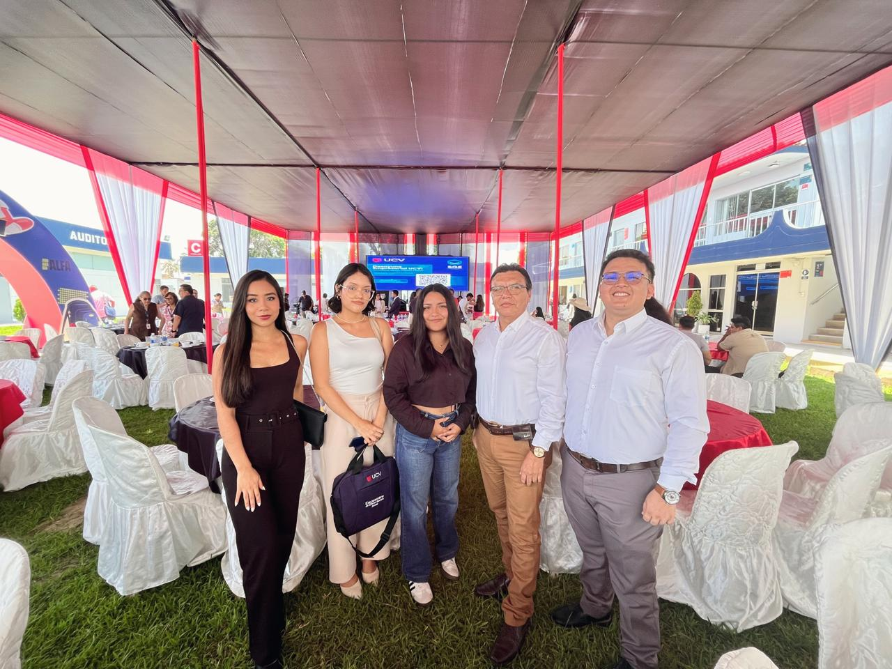

RECONOCIMIENTO · 2024
Condecoración por la Asociación de Estudiantes de Derecho del Perú
Entrega de la condecoración otorgada por la Asociación de Estudiantes de Derecho del Perú en 2024.
ACTIVIDADES Y RECONOCIMIENTOS

RECONOCIMIENTO · 2024
Entrega de la condecoración otorgada por la Asociación de Estudiantes de Derecho del Perú en 2024.

ENCUENTRO PROFESIONAL
Un momento compartido con los asistentes durante la entrega de un reconocimiento.

ACTIVIDAD ACADÉMICA
Un espacio de encuentro e intercambio con integrantes de la comunidad universitaria.
DA EL PRIMER PASO